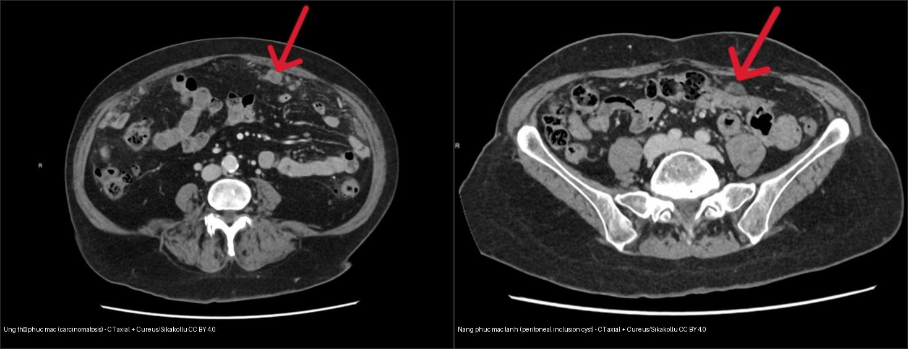
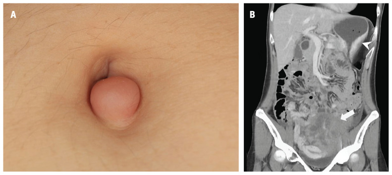
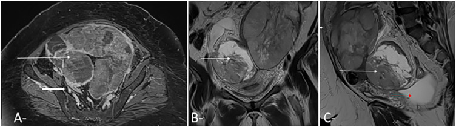
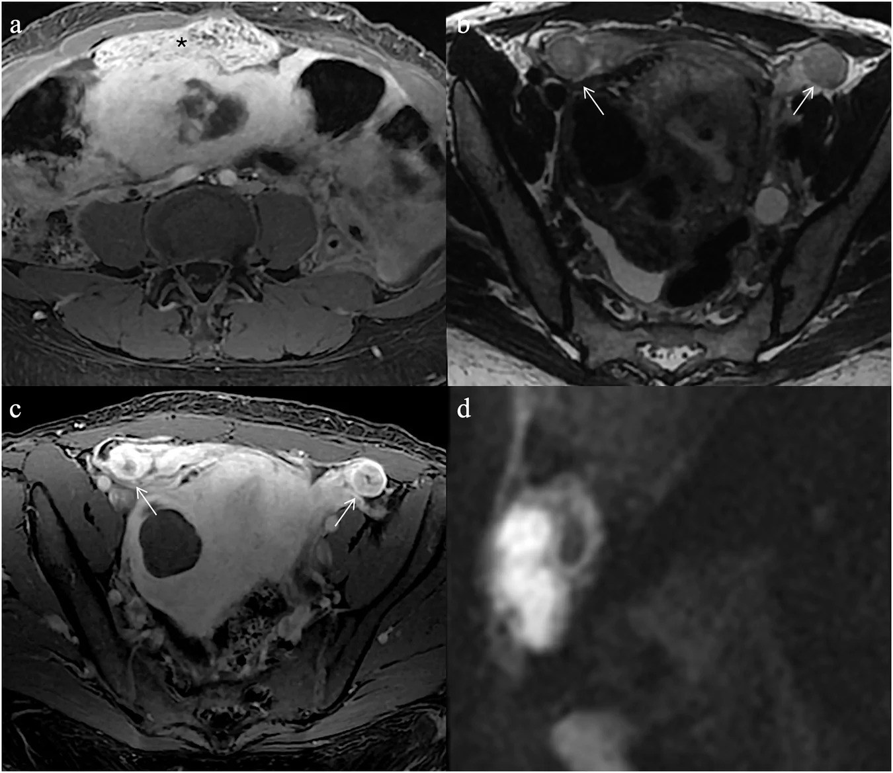

535 — Ung thư buồng trứng, gieo rắc phúc mạc & u Krukenberg / Ovarian cancer, peritoneal carcinomatosis & Krukenberg tumour
Tags: pattern:k-u-buong-trung vung:buong-trung vung:phuc-mac score:FIGO score:PCI protocol:MRI-chau protocol:CT-chau
Mức chắc chắn (certainty): tổng hợp y văn (literature synthesis) — nhóm tự biên từ y văn mở + các ca minh họa có giấy phép (Krukenberg, carcinomatosis, lao phúc mạc), không phải ca nguyên văn đơn lẻ.
1. Tổng quan — Ung thư buồng trứng lan theo dịch phúc mạc, không theo dòng máu
- Dịch tễ: ung thư biểu mô buồng trứng (epithelial ovarian cancer) chiếm ~90% ung thư buồng trứng; thể mô học hay gặp nhất là ung thư biểu mô huyết thanh độ cao (high-grade serous carcinoma — HGSC) ~70% các ca biểu mô, tuổi trung bình ~60. Giai đoạn I sống 5 năm ~90% nhưng khi đã gieo rắc phúc mạc (IIIC–IV) tụt còn ~30–40%.
- Cơ chế lan (TẠI SAO hình ảnh như vậy): tế bào u bong khỏi bề mặt buồng trứng/vòi vào dịch phúc mạc → chảy theo trọng lực và dòng chảy phúc mạc → lắng ở vùng trũng: túi cùng Douglas, đại tràng sigma, mạc nối (omentum), mặt ngoài gan/lách, vòm hoành. Vì thế hình ảnh đặc trưng là gieo rắc (transcoelomic spread): nốt phúc mạc + bánh mạc nối (omental cake) + cổ trướng dịch tế bào học dương tính, chứ không phải các ổ di căn nhu mô rời rạc như sarcoma.
- TẠI SAO ngấm mạnh + hạn chế khuếch tán (DWI/ADC): khối u đặc nghèo mô đệm nhưng tỷ lệ nhân/bào tương cao → nước nội–ngoại bào bị chèn ép → DWI b = 800–1000 sáng, ADC hạ (thường < 1,0 × 10⁻³ mm²/s); mạng mao mạch tân tạo rò rỉ ngấm nhanh → đường cong Type III (washout) trên DCE (liên hệ
530). Tế bào nhẫn trong u Krukenberg nhầy đặc + đệm xơ cũng cho DWI sáng nhưng tín hiệu T2 trung tính–không đồng nhất hơn. - TẠI SAO bánh mạc nối: mạc nối là "miếng đệm" giàu mô lympho trải khắp ổ bụng; dịch mang tế bào u đổ vào đây → tế bào lắng đọng rồi xơ hóa → mạc nối dày thấm đặc. Ngưỡng: mạc nối dày > 1 cm hoặc có nốt/gồ cục = bánh mạc nối. Trên CT, bánh mạc nối nằm trước đại tràng ngang, đôi khi tạo dấu bánh kẹp (sandwich sign).
- TẠI SAO cổ trướng: tế bào u bít mạch lympho màng bụng + tăng tính thấm mao mạch → dịch; phân biệt dịch ác tính (kèm nốt/bánh) với cổ trướng cơ năng (xơ gan, suy tim — không nốt).
- U Krukenberg (Krukenberg tumour): di căn buồng trứng của adenocarcinoma tế bào nhẫn (signet-ring cell carcinoma) — nguyên phát dạ dày ~70%, tiếp theo đại tràng, ruột thừa, vú. Đặc điểm hình ảnh gợi ý: hai bên (bilateral), khối đặc – hỗn hợp, giữ nguyên hình dạng buồng trứng (không phá vỏ), DWI sáng. TẠI SAO hai bên: tế bào u theo dòng phúc mạc/đường bạch huyết lắng đối xứng hai buồng trứng. Chẩn đoán trước mổ rất hay sót (series 15 BN 2008–2024: 0/15 được chẩn đoán trước mổ).
- Tiên lượng & định lượng: u Krukenberg rất xấu — tổng quan 1.815 BN, trung vị sống sót (mOS) 9–50 tháng; series 15 BN mOS 12 tháng. Cắt u chỉ lợi khi R0 (không còn u đại thể): mOS R1/R2 (~10–11 tháng) ngang nhóm không mổ.
2. Mẫu hình + chẩn đoán phân biệt theo vị trí (Gamut)
- Khối phần phụ đặc một bên → nghĩ ung thư biểu mô buồng trứng nguyên phát (một bên), u mầm (germ cell), u mô đệm–dây sinh dục, hoặc di căn đơn độc.
- Khối phần phụ đặc hai bên → di căn (Krukenberg) là nghi ngờ hàng đầu, cạnh tranh với lymphoma, di căn vú (thể tiểu thùy), HGSC nguyên phát hai bên (thường không đối xứng).
- Gieo rắc phúc mạc theo vị trí: mạc nối (bánh) → mạc treo/ruột → túi cùng Douglas → mặt ngoài gan/lách (lõm nhu mô do nốt/chén — scalloping, đừng nhầm nang/nhồi máu) → vòm hoành → khoang cạnh đại tràng. Nốt nhỏ < 5 mm trên CT rất dễ sót, nhất là mặt ruột non (CT và siêu âm đều kém ở vùng này).
- Gan: di căn nhu mô rời rạc = giai đoạn IVB; mặt gan bị ép lõm bởi khối nhầy ngoài gan = pseudomyxoma peritonei (thường từ u ruột thừa) → gọi là "ascites" là sai bản chất.
- Dịch: cổ trướng lượng nhiều + không nốt → nguyên nhân hệ thống; cổ trướng + nốt + bánh mạc nối → carcinomatosis.
- Mnemonic gieo rắc phúc mạc "SISTER" không cần — thay bằng 5 tầng vị trí: mạc nối → mạc treo/túi cùng → gan-lách → vòm hoành → khoang cạnh đại tràng.
3. Bảng so sánh phân biệt (ma trận đối chiếu)
| Thực thể (entity) | Hình ảnh điển hình | Chốt vào (rule-in) | Chốt loại (rule-out) | Gợi ý xác nhận |
|---|---|---|---|---|
| HGSC buồng trứng nguyên phát | Khối đặc–hỗn hợp 1 bên hoặc 2 bên không đối xứng, chồi nhú, ngấm mạnh + washout, DWI sáng | Chồi nhú ≥ 4 + DWI sáng + dịch + nốt phúc mạc | Hai khối đối xứng giữ hình buồng trứng → nghĩ di căn | CA-125, giải phẫu bệnh, O-RADS MRI |
| U Krukenberg (di căn dạ dày) | Hai khối đặc 2 bên, giữ hình buồng trứng, T2 không đồng nhất, DWI sáng, ± bánh mạc nối | 2 bên + giữ vỏ + tiền sử/đồng thời K tiêu hóa | Chồi nhú đơn độc 1 bên → nguyên phát | Nội soi dạ dày–đại tràng + hóa mô miễn dịch (CK7/CK20, CDX2, SATB2) |
| Di căn vú thể tiểu thùy | Thâm nhiễm dày đặc, có thể 2 bên, tế bào nhẫn cũng gặp | Tiền sử K vú + dấu hiệu phúc mạc | Nguyên phát dạ dày nếu không có tiền sử vú | IHC (GATA3, ER), nội soi vú |
| Pseudomyxoma peritonei | Dịch nhầy dạng keo + scalloping mặt gan/lách + nốt | Lõm mặt gan + dịch keo | Cổ trướng nước tự do → carcinomatosis | Sinh thiết, nội soi ruột thừa |
| Lao phúc mạc (mimic) | Dịch + nốt + hạch vôi hóa + dày phúc mạc đều, lao phổi cũ | Hạch vôi + ADA dịch > 35–40 U/L + lao cũ | Bánh mạc nối thô + K nguyên phát → carcinomatosis | ADA, PCR lao, không mổ bụng |
| Nang bao phúc mạc lành (mimic) | Nang dịch nhiều thùy bao quanh buồng trứng, dấu "mạng nhện", không nốt | Buồng trứng lành nằm trong nang + không nốt đặc | Nốt đặc/omental cake → carcinomatosis | Theo dõi, tránh mổ/hóa trị oan |

Trái: carcinomatosis — nốt đặc + mạc nối dày thấm đặc dọc thành bụng trước (mũi tên). Phải: nang bao phúc mạc lành tính — dịch nhiều thùy, thành mảnh, không nốt đặc xâm nhiễm. Nguồn: Sikakollu et al., Cureus 2025 Fig. 4 & 5, CC BY 4.0 (ảnh ghép letterbox).4. Protocol + phân giai đoạn FIGO & chỉ số PCI
- CT bụng–chậu có cản quang (thì tĩnh mạch cửa 60–70 giây) là nền tảng phân giai đoạn: tìm nốt phúc mạc, bánh mạc nối, cổ trướng, hạch chậu/cạnh ĐMC, và quét ngực (tràn dịch màng phổi = IVA).
- MRI chậu: T2W đa mặt phẳng + T1W fat-sat + DWI/ADC (b = 800–1000) + DCE (Type I–III) khi khối phần phụ chưa rõ; phối hợp O-RADS MRI (bài
530). Đặc điểm đặc–ngấm–DWI sáng gợi ác tính. - FIGO 2014 (làm rõ 2021):
- I: khu trú buồng trứng/vòi; II: lan trong khung chậu (tử cung/vòi/đoạn cuối ruột);
- III: gieo rắc phúc mạc ngoài khung chậu và/hoặc hạch sau phúc mạc;
- IIIA1(i) chỉ hạch sau phúc mạc ≤ 10 mm; IIIA1(ii) hạch > 10 mm;
- IIIA2 gieo rắc phúc mạc vi thể; IIIB gieo rắc đại thể ≤ 2 cm; IIIC gieo rắc > 2 cm và/hoặc hạch dương;
- IV: di căn xa — IVA tràn dịch màng phổi có tế bào ác; IVB di căn nhu mô gan/lách, hạch ngoài ổ bụng (kể cả bẹn), xuyên thành ruột.
- Chỉ số ung thư phúc mạc PCI (Peritoneal Cancer Index — Sugarbaker): chia ổ bụng 13 vùng, mỗi vùng điểm 0–3 (lớn nhất > 5 cm = 3) → tổng 0–39. Đo bằng CT tương quan tốt với PCI phẫu thuật (ρ = 0,867 với CT, cao hơn siêu âm ρ = 0,750). Ngưỡng PCI phẫu thuật 14,5 dự báo giảm khối hoàn toàn (Se 84,7%, Sp 100%); kinh điển PCI > 20 thường không giảm khối triệt để.
- Phẫu thuật giảm khối (cytoreduction): mục tiêu R0; tồn dư đại thể > 1 cm = giảm khối dưới mức tối ưu (định nghĩa truyền thống). Cân nhắc HIPEC ở bệnh nhân chọn lọc.
- U Krukenberg 2 bên: bắt buộc nội soi dạ dày–đại tràng tìm nguyên phát + hóa mô miễn dịch; không mổ buồng trứng đơn thuần khi chưa rõ nguồn.
flowchart TD
A[Khối phần phụ + bụng báng] --> B{Đặc/ngấm mạnh/DWI sáng?}
B -->|Không| Z[Nang lành: theo dõi - O-RADS 2/3]
B -->|Có| C{Một bên hay hai bên?}
C -->|Một bên + chồi nhú| D[HGSC nguyên phát: MRI + CA-125]
C -->|Hai bên đối xứng giữ vỏ| E[Nghi Krukenberg: nội soi dạ dày-đại tràng + IHC]
D --> F{CT: có nốt/bánh mạc nối?}
E --> F
F -->|Có| G[Tính PCI: <=14,5 dự báo R0]
F -->|Không| H[FIGO I-II: phẫu thuật thì đầu]
G --> I[Giảm khối + hóa trị - mục tiêu R0]
5. Biến thể bình thường và cạm bẫy
- Lao phúc mạc dễ bị gọi nhầm carcinomatosis → mổ bụng vô ích: đòi hỏi ADA dịch > 35–40 U/L, hạch vôi hóa, lao phổi cũ (xem ảnh quiz Ca 4). Dấu hiệu "bánh mạc nối" thô + K nguyên phát mới nghiêng về ung thư.
- Nang bao phúc mạc lành tính (peritoneal inclusion cyst): nang dịch bao quanh buồng trứng lành, vách mảnh, dấu "mạng nhện" — không nốt đặc xâm nhiễm → đừng hóa trị/mổ oan (ảnh composite trên).
- Bỏ sót nốt < 5 mm ở mặt ruột non — CT và siêu âm đều kém; khi mục tiêu R0 phải soi ổ bụng (laparoscopy) đánh giá.
- Tràn dịch màng phổi = IVA: trên CT bụng nhớ đọc cả đáy phổi, đừng bỏ sót.
- Nang chức năng/nang xuất huyết buồng trứng tưởng ung thư → theo dõi 6–8 tuần (xem
530). - Sister Mary Joseph nodule (di căn rốn): nốt cứng vùng rốn có thể là dấu hiệu chỉ điểm đầu tiên của K tiêu hóa di căn phúc mạc/buồng trứng — đừng bỏ qua khi thấy nốt rốn (ảnh quiz Ca 1).
- "Thỏa mãn tìm kiếm" (satisfaction of search): thấy khối buồng trứng lớn rồi dừng → quên tìm nguyên phát dạ dày/đại tràng trong u Krukenberg.
- Pseudomyxoma đừng gọi là "cổ trướng đơn thuần" — dịch keo + scalloping mặt gan/lách là chìa khóa.
6. Tự lượng giá — Blind Quiz
Ca 1 — Nữ 27 tuổi, nốt vùng rốn mới xuất hiện + bụng to dần. Đọc phim.

- Gợi ý: nốt rốn cứng, đỏ, ~1,5 cm; bụng to, khối chậu.
- Hỏi: nốt rốn gợi ý gì? Trên CT, khối đâu là nguyên phát, đâu là di căn?
Bấm để hiện đáp án (findings + chẩn đoán)
- Dấu hiệu (findings): (A) Sister Mary Joseph nodule — nốt di căn ở rốn. (B) CT: khối dạ dày đồng nhất 6,35 cm (đầu mũi tên) + khối chậu hỗn hợp 7,98 cm (mũi tên cong) xâm lấn cơ.
- Chẩn đoán (diagnosis): u Krukenberg (di căn buồng trứng của adenocarcinoma dạ dày tế bào nhẫn) có nốt rốn chỉ điểm — vì tế bào nhẫn di theo đường phúc mạc/lympho tới buồng trứng và rốn.
- Nguồn ảnh: CMAJ 2025 Fig. 1, CC BY-NC-ND 4.0 (giữ nguyên bản).
Ca 2 — Nữ trung niên, hai khối phần phụ. Đọc MRI chậu.

- Hỏi: vì sao nghĩ di căn hơn nguyên phát? Dấu hiệu nào gợi ý Krukenberg?
Bấm để hiện đáp án (findings + chẩn đoán)
- Dấu hiệu (findings): khối buồng trứng hai bên, đặc–hỗn hợp, tín hiệu T2 trung tính–không đồng nhất, giữ dạng buồng trứng (mũi tên trắng). CT kèm khối chậu trái hỗn hợp ~17 cm.
- Chẩn đoán (diagnosis): u Krukenberg (di căn buồng trứng) — hai bên + giữ vỏ + đặc gợi ý di căn; bước tiếp theo là nội soi dạ dày–đại tràng tìm nguyên phát + hóa mô miễn dịch.
- Nguồn ảnh: Radiol Case Rep 2026 Fig. 2–3, CC BY-NC-ND 4.0 (giữ nguyên bản).
Ca 3 — Hai bệnh nhân, cùng có dịch + tổn thương phúc mạc. Ảnh nào là ung thư, ảnh nào lành tính?
- Hỏi: gọi tên tổn thương mỗi bên; dấu hiệu nào phân biệt carcinomatosis với nang lành?
Bấm để hiện đáp án (findings + chẩn đoán)
- Trái = carcinomatosis (ung thư phúc mạc): nốt đặc + mạc nối dày thấm đặc bám thành bụng trước (mũi tên đỏ) — tổn thương đặc xâm nhiễm.
- Phải = nang bao phúc mạc lành tính: dịch nhiều thùy, vách mảnh, không nốt đặc — dấu "mạng nhện" bao quanh buồng trứng lành.
- Chốt: có nốt/mạc nối đặc xâm nhiễm = ác tính; nang dịch thuần không nốt = lành (tránh mổ/hóa trị oan).
- Nguồn: Sikakollu et al., Cureus 2025, CC BY 4.0 (ảnh ghép letterbox).
Ca 4 — Nữ 40 tuổi, đau bụng, dịch + dày phúc mạc. Ung thư hay lao?

- Hỏi: đâu là 2 dấu hiệu giúp nghiêng về lao phúc mạc thay vì carcinomatosis?
Bấm để hiện đáp án (findings + chẩn đoán)
- Dấu hiệu (findings): dày phúc mạc ngấm đều (a, c) + nhân DWI ở vòi trứng/hạch (b, d).
- Chẩn đoán (diagnosis): lao phúc mạc — dạng "mimic" của carcinomatosis; nghiêng về lao khi hạch vôi hóa + ADA dịch > 35–40 U/L + lao phổi cũ → điều trị lao, không mổ bụng.
- Nguồn ảnh: Insights into Imaging 2026 Fig. 12, CC BY 4.0.
Bài liên quan chéo
- 500 – Tổng quan Vú & Sản phụ khoa
- 530 – Khối phần phụ O-RADS, dermoid & xoắn
- 525 – Ung thư nội mạc & cổ tử cung FIGO trên MRI
- 540 – Lạc nội mạc sâu (DIE) & PID
- 141 – Phúc mạc: carcinomatosis vs lao
- 3116 – Di căn buồng trứng Krukenberg: hai bên, T2 tối, R0 mới kéo dài sống (đã có)
- 120 – Khối gan nền (di căn gan)
- 160 – Bụng cấp cứu GI
Ảnh
535_krukenberg-SMJ_CT_PMC12503699.jpg,535_k-buong-trung_MRI_PMC13330600.jpg,535_k-buong-trung_CT_PMC13330600.jpg,535_carcinomatosis_CT_PMC12717455.jpg,535_nang-phuc-mac_CT_PMC12717455.jpg,535_lao-phuc-mac_MRI_PMC13586104.jpg,composite_carcinomatosis-vs-nang-phuc-mac.jpg. Nguồn + giấy phép từng ảnh trongimages/CREDITS.md.
Không dùng để chẩn đoán độc lập khi chưa có người hướng dẫn.